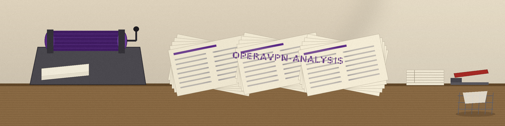

A twenty one page investigation asking whether the free browsing protection bundled with Opera GX deserves trust, and answering that it behaves as a browser only HTTPS proxy rather than a full tunnel.
The free service is a browser-only HTTPS proxy, not a system-wide VPN. Traffic outside the browser is not carried, and it uses no tunneling protocol such as OpenVPN or WireGuard.
The paid VPN Pro tier, by contrast, is a genuine system-wide VPN (Lightway, OpenVPN, IKEv2, kill switch, 3,000+ servers), and the report argues the free tier's limits function as an upsell funnel.
WebRTC and DNS leak exposure in the free service, and the manual settings changes a user must make to mitigate them, which sits awkwardly next to the product's "zero extra steps" marketing.
| Opera's current claim: the free service keeps no logs. | The September 2024 Deloitte audit examined that no-log configuration and supported it, as a snapshot of that moment. |
| The historical record: for years, users and reviewers alleged that Opera logged user information. | That long period of distrust is the context the audit was commissioned to answer; the report treats the logging section as the part most likely to date first. |
| Opera's defense: it is a Norwegian company under Norwegian jurisdiction and GDPR. | Opera was acquired in 2016 by a Chinese consortium led by Kunlun Tech, and China's National Intelligence Law frames the risk the report weighs against that defense. |
| Ownership is only a corporate detail. | The CFIUS-ordered Grindr divestiture, forced on the same owner, stands in the report as the precedent for why ownership is not a detail. |
On effectiveness: No. The free service is not an effective tool for comprehensive data protection. It is acceptable only for casual IP masking, simple geo-restriction bypassing, and light encryption on public Wi-Fi, and it is dangerous for torrenting, sensitive activity, or protection against targeted adversaries.
On trustworthiness: too shaky for privacy-first users. The ownership structure creates a risk that no technical audit can retire, even though the current no-log configuration was independently audited.
Take home the stapled copy: the full report (PDF, 21 pages) The repo on GitHub
The visuals folder in the repo
Scope note from the report itself: this repository contains the finished report only; there is no code and nothing to run. Its findings are the author's synthesis of the 49 sources in its reference list, accessed 8 July 2025.